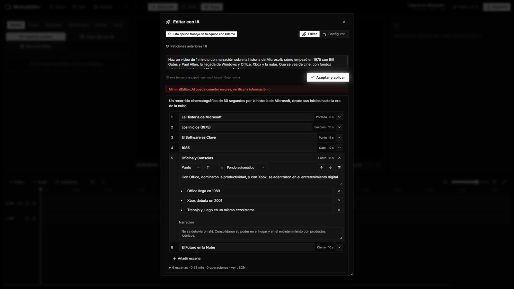
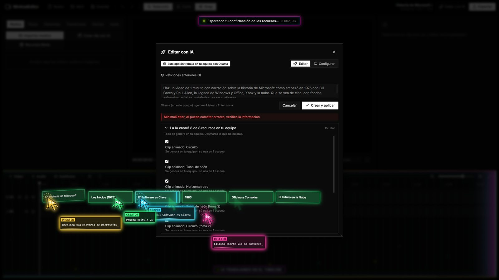
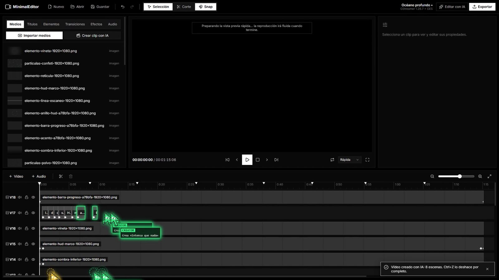
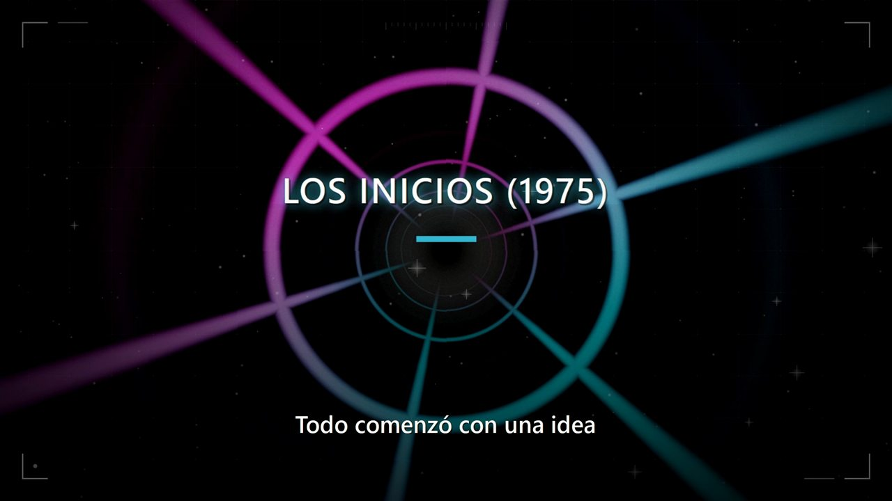
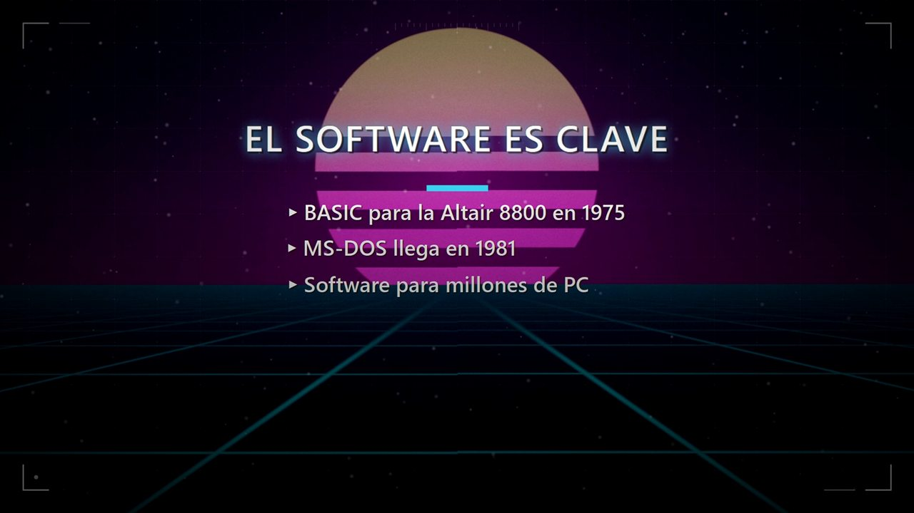
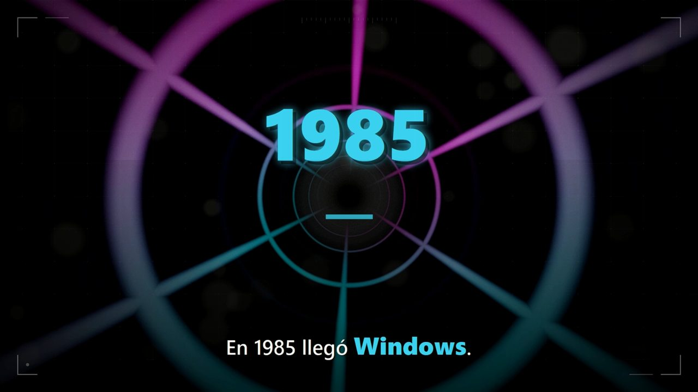
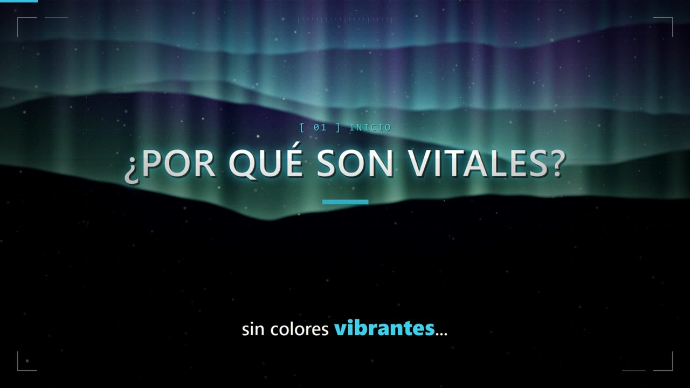
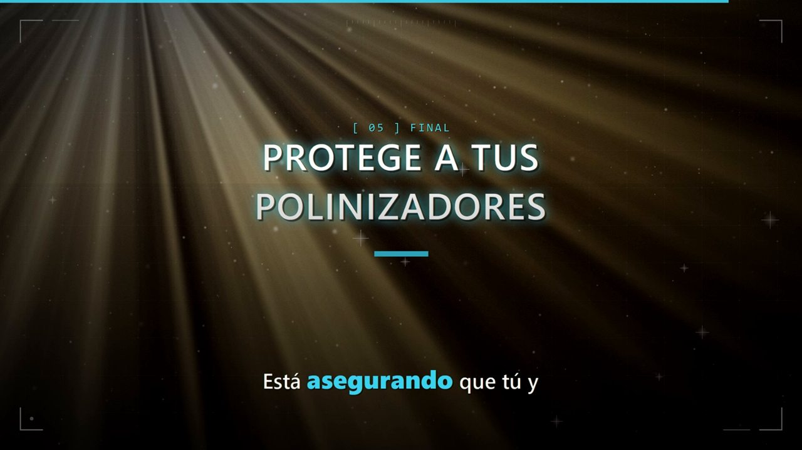
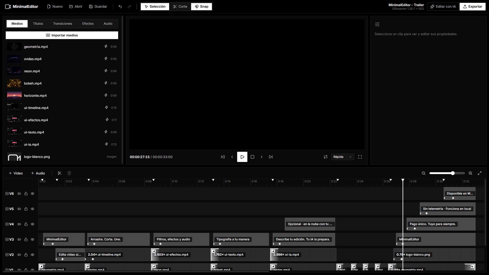
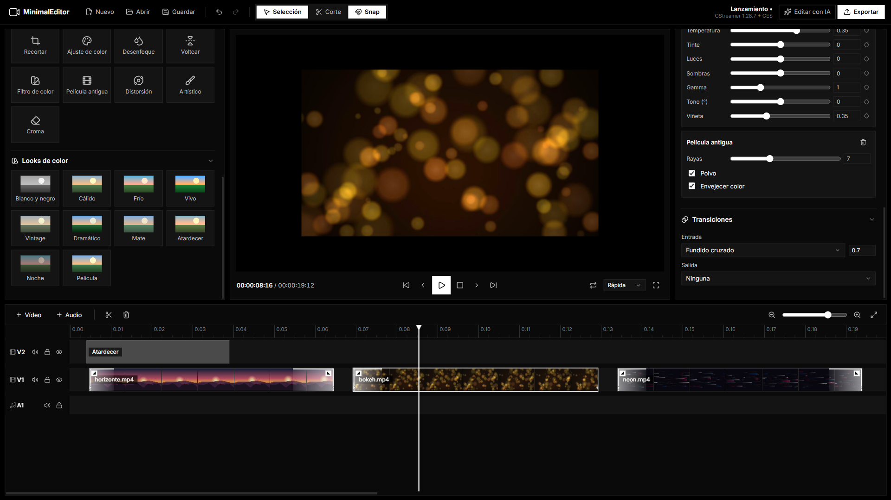

Creator
Clase: constructor
Crea los clips, títulos, fondos y sonidos de cada escena.
- Especialidad
- Crear
Guion, narración con voz, música original, subtítulos y animaciones en minutos. Tú revisas y decides qué se queda. Y lo pagas una sola vez: $149 MXN y es tuyo para siempre.
Le dices de qué quieres el video y MinimalEditor hace el trabajo pesado frente a ti. Nada pasa sin que lo veas.


Cuatro cursores con una misión cada uno. Cuando aplicas el plan entran a tu timeline y lo construyen en vivo, clip por clip.
Clase: constructor
Crea los clips, títulos, fondos y sonidos de cada escena.
Clase: explorador
Recorre tu proyecto y revisa cada escena antes de tocar algo.
Clase: afinador
Ajusta tiempos, posiciones, efectos y transiciones hasta que todo encaja.
Clase: limpiador
Quita lo que sobra para que el resultado quede limpio.
Listos para editar

Escenas de dos videos de ejemplo hechos con IA local: «La historia de Microsoft» (arriba) y «Las abejas» (abajo). Los fondos animados, la música y la voz se generaron en la computadora.





La IA puede cometer errores: verifica fechas y datos antes de publicar tu video.
Pensado para tareas de la escuela, exposiciones, videos del trabajo y recuerdos familiares. Lo aprendes en minutos, no en semanas.
Arrastra tus clips, corta con un clic, recorta los bordes y ordena las escenas con imantado.

Corrección de color, looks de un clic y efectos con carácter.

Plantillas listas para usar y control total del texto.

Mezclador por pista y efectos al estilo de los editores de audio profesionales.

Otros editores cobran mensualidades o más de mil pesos por una licencia de por vida. Aquí pagas una vez lo que cuesta una comida, y es tuyo para siempre.